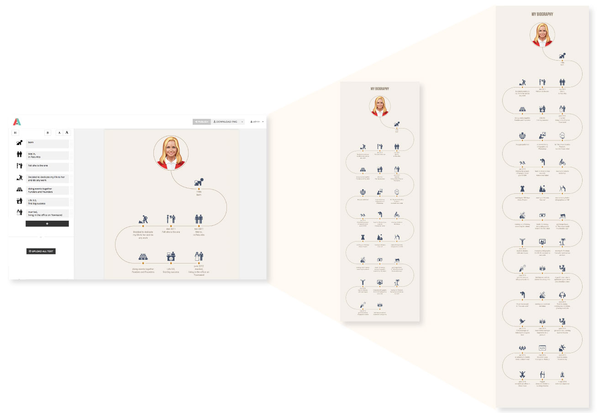
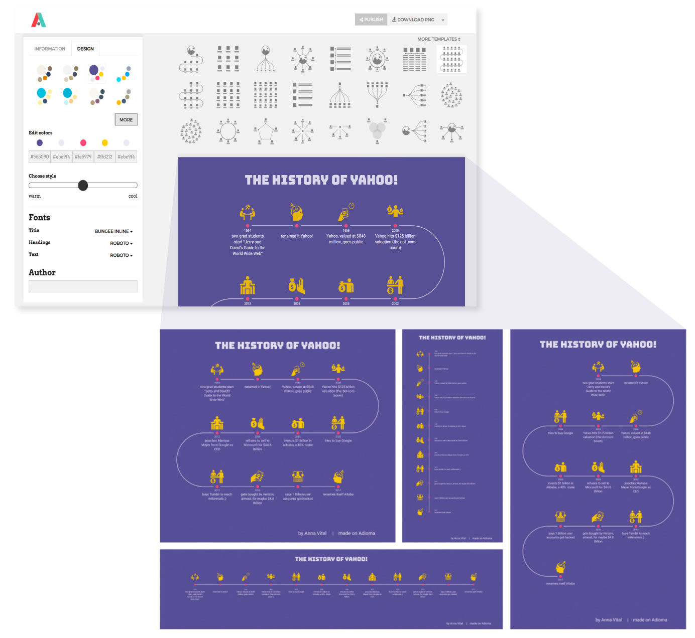
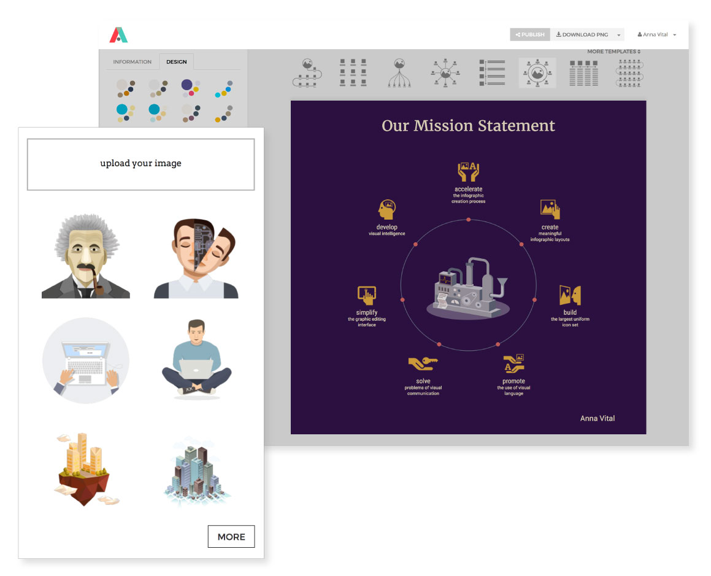
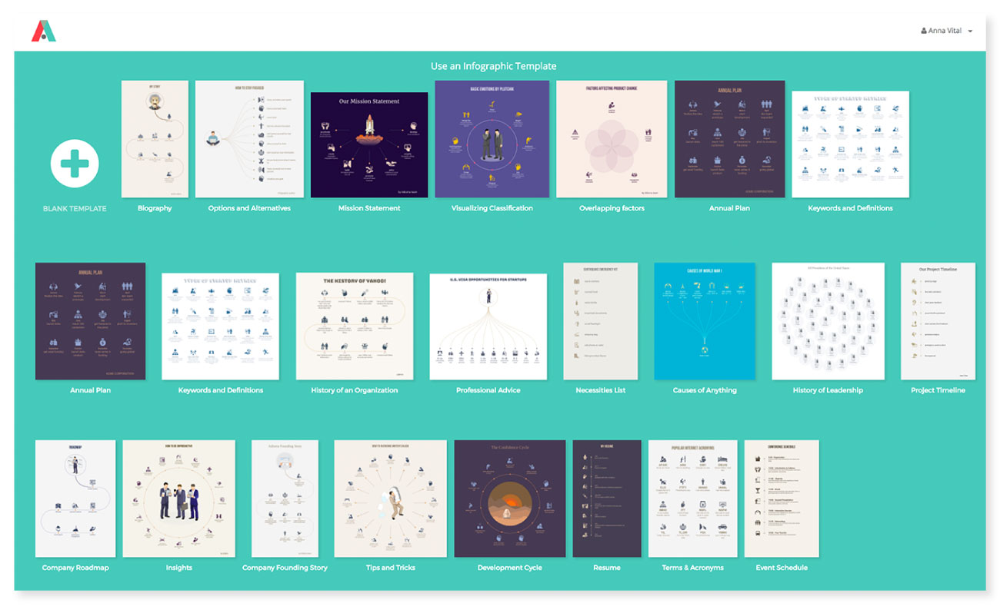

Generative Templates
Infographic templates that generate themselves
Generative infographic templates build themselves to adapt to your text, so you can add as much content as you like.
We want to make sure your infographics accomplish the goal of communicating your idea. The best infographics are built on top of universally recognizable templates such as the timeline, grid, tree, and cycle. We make these templates fast for you to create and adapt to your content.

Traditional infographic makers let you create infographics out of static templates. With static templates you have to spend time and effort to tailor the template to your content. In Adioma, all infographic templates are generated algorithmically. This way, no matter how many points you add, your template always builds itself instantly and looks perfect.
Icon Language
Icons to match your words to pictures
Successful infographics are as visual as possible. How do you find a visual equivalent for all your words? Use an icon language, which is essentially a very large icon collection with all icons created in the graphic same style.
Easy Template Switching
Template switcher lets you look at the same infographic in different templates
Infographic templates determine if your readers understand your infographic. Structureless infographics are less successful than those with an obvious visual structure. How do you know which structure is best for your infographic? You can test this visually by switching between different templates in Adioma. Choose the one that best fits your content.

Infographic Illustrations
Add illustrations to your infographic to have a focal point
Infographics that have a focal point are more likely to be read. That focal point is either the template itself or a central illustration. We make it easy to add illustrations to your infographic. You can also apply an entire color palette with one click without having to color each element individually. We included premium illustrations that easily integrate into many templates.

Editable Infographic Samples
Start quickly by editing pre-made templates with pre-selected icons
For many visual learners it is easier to start with a pre-made infographic. This way all you have to do is change the content and the structure is already there. Here are some examples of pre-made templates that include infographic resume, roadmap, project timeline, and event schedule.

Other Features
Icon to word matching
works to convert your words into their visual equivalent. The more you use Adioma, the better it knows what you mean - it is AI in the making.
The Largest Icon Collection
is universal symbols created in a single graphic style, comprising a visual language. It covers everything from daily life to science.
Easy Export
download or publish your infographics with one click, either in vector or raster format.
One-click color schemes
automatic infographic color schemes take care of readability and color harmony.